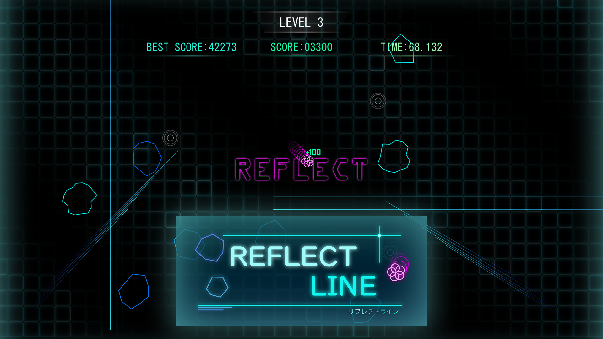
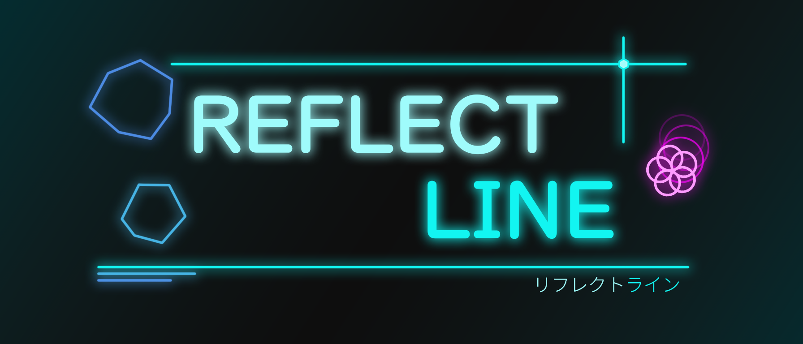
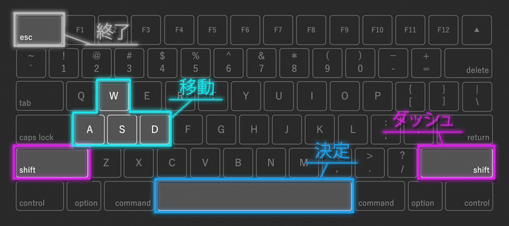
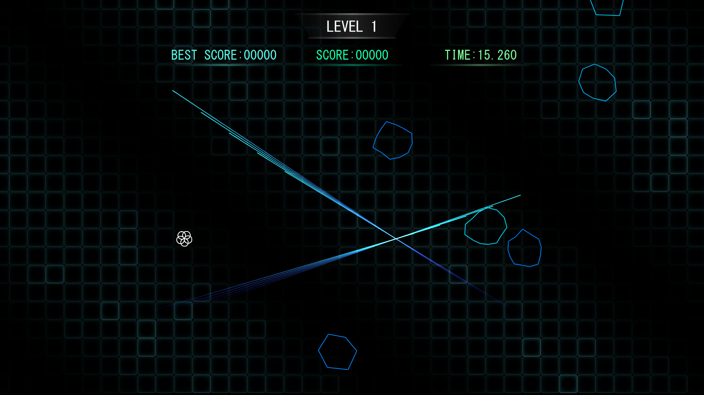
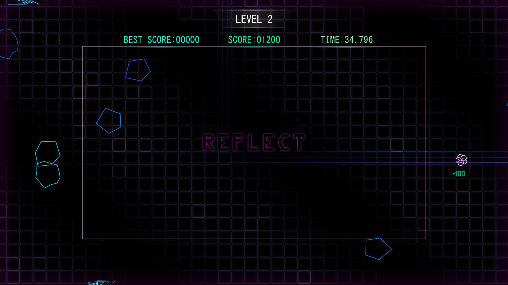
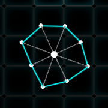
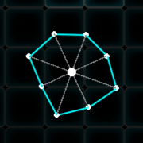
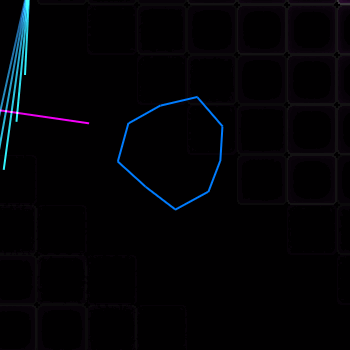

REFLECT LINE
障害物を避けるだけではない。
障害物にあえて当たり、反射させて別の障害物を破壊する。
斬新なデザインの反撃型回避アクションゲームです。
C++
デザイン
自作ライブラリ
ご覧いただきありがとうございます。本サイトは随時更新中です。
プログラマー志望
Mail: kurosawareo.job@gmail.com
| 生年月日 | 2005/09/18 |
| 学校 / 学科 | 横浜デジタルアーツ専門学校 ゲーム科 |
| 趣味 / 特技 |
プログラミング 動画鑑賞 アドオン開発 動画制作 BGM作曲 |
| 取得資格 |
計算技術検定 3級 情報技術検定 3級 CGクリエイター検定 ベーシック 情報検定 情報活用試験 3級 |
ゲーム制作サークルに所属し、チーム制作を通じて協働経験を積んでいます。
学内のGameJamでは、参加者兼運営として会場準備やツール開発をしています。
また、学生自治会にも所属し、学園祭やゲーム大会イベントの運営に携わっています。
「Minecraft」が好きで、長年自作ゲームの主催・運営を行った経験があります。 Minecraftをきっかけに、アドオン制作、動画制作、作曲などに取り組んでいます。 知人の誕生日に記念動画を作って贈るなど、クリエイティブな活動を続けています。
掲載中のため、随時更新します。今後はクリックで詳細を開けるようにする予定です。
障害物を避けるだけではない。
障害物にあえて当たり、反射させて別の障害物を破壊する。
斬新なデザインの反撃型回避アクションゲームです。

有名な落ちものパズルゲームを再現。
穴の形状に沿って回転し、Tスピンなどの特殊な技にも対応しています。
BGMは原作曲を自作アレンジで制作しています。

「噛みつく」を活かして道を切り開け。
首を伸ばしてブロックを壊したり、運んだり、時には自分が移動したりと、ちょっと面白おかしなアクションゲームです。

廃病院で迷った少年の、ある一時の物語。
そこで出会う5人の少女の幽霊は、生前に五感の1つを失っていたようです。
少年は彼女たちの未練を晴らすため、手助けをすることに...
主人公は水？氷・水・水蒸気を切り替えて進もう。
水蒸気で浮き、水で網をすり抜け、氷でボタンを押すなど、水の多様な特性を活かしたギミックが登場します。
下記フォームから送信いただけます。

キーボード

Xboxコントローラ

| ジャンル | 反撃型回避アクション |
| 操作端末 | キーボード / コントローラ |
| プレイ人数 | 1人 |
| 開発期間 | 2025年4月 ～ 現在 |
| 開発人数 | 2人 |
| 使用技術 | C++ / DxLib |


通常モード 
反射モード 
本作ではオブジェクトやUIなど、至る所にアニメーションを入れています。
常に何かが動いているため、ゲーム全体の迫力が増しています。


形と線の数は、独自のアルゴリズムでランダムに生成しています。
1. 隕石の線の数を抽選
2. 隕石の中心から、頂点をどのくらいの距離離すかを抽選
 
 
また、隕石が壊れた時の演出にもこだわり、壊した時の気持ち良さが出るよう工夫しました。
